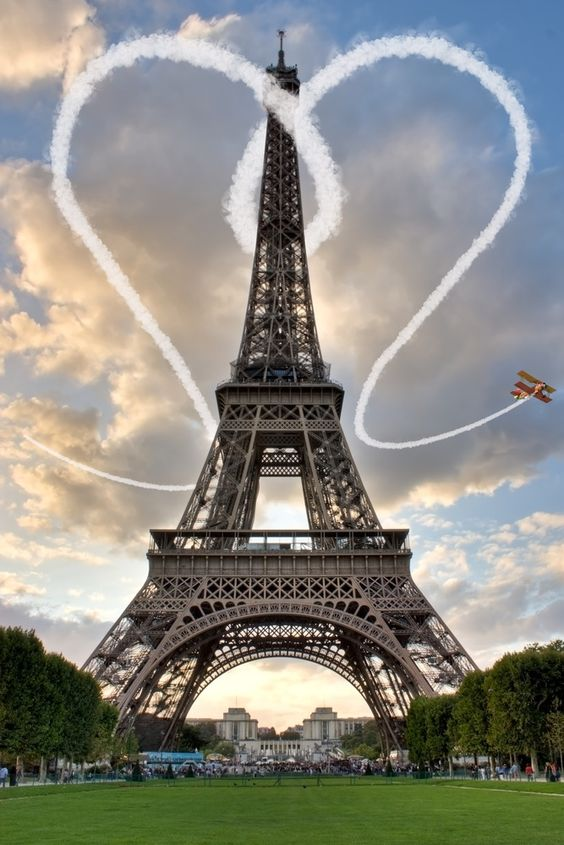
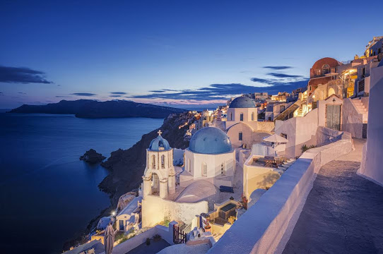

Hi everyone ! It's me , This is Thinzar. Firstly, Let me introduce somehting about me. At this moment I am creating my very first website.
Paris, France's capital, is a major European city and a global center for art, fashion, gastronomy and culture. Its 19th-century cityscape is crisscrossed by wide boulevards and the River Seine. Beyond such landmarks as the Eiffel Tower and the 12th-century, Gothic Notre-Dame cathedral, the city is known for its cafe culture and designer boutiques along the Rue du Faubourg Saint-Honoré.
Santorini is one of the Cyclades islands in the Aegean Sea. It was devastated by a volcanic eruption in the 16th century BC, forever shaping its rugged landscape. The whitewashed, cubiform houses of its 2 principal towns, Fira and Oia, cling to cliffs above an underwater caldera (crater). They overlook the sea, small islands to the west and beaches made up of black, red and white lava pebbles.
